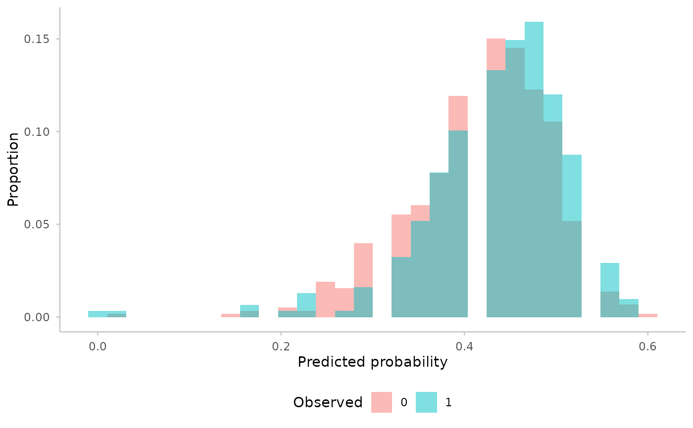
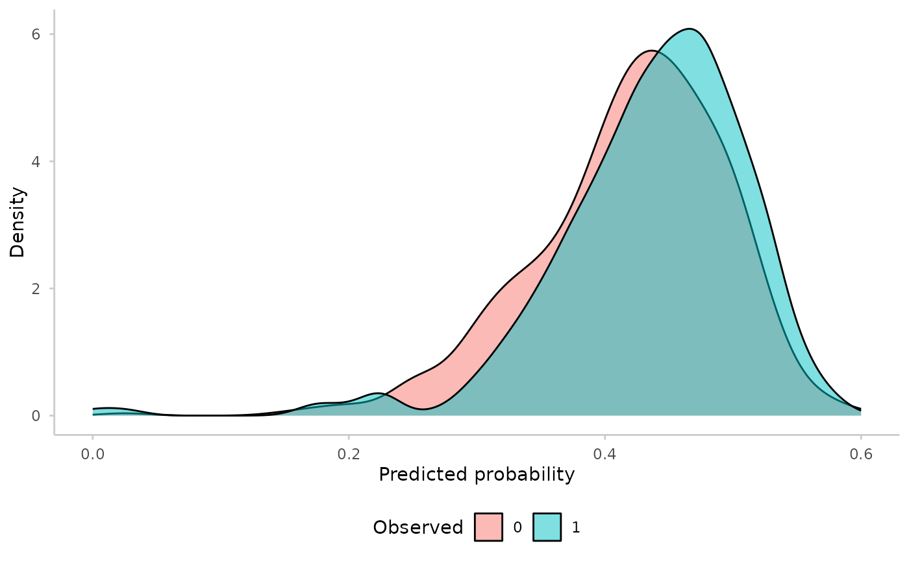
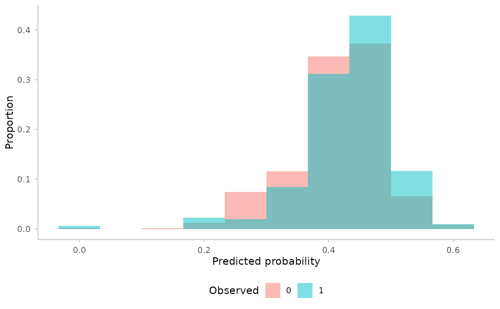
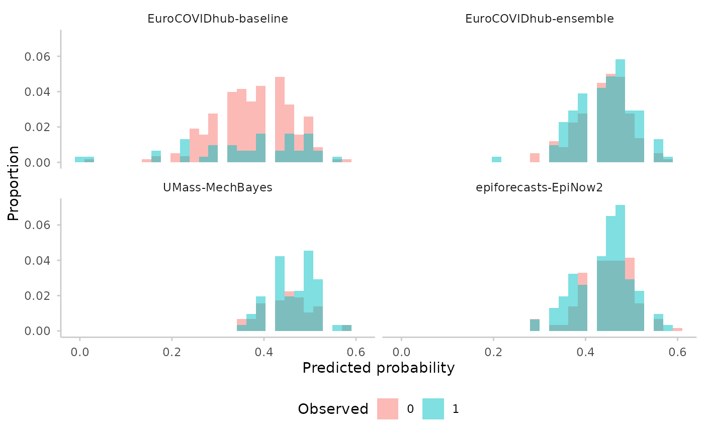

Visualise the discrimination ability of binary forecasts by plotting the distribution of predicted probabilities, stratified by the observed outcome. A well-discriminating model will show clearly separated distributions for the two observed levels.
Usage
plot_discrimination(forecast, type = c("histogram", "density"), ...)Arguments
- forecast
A
forecast_binaryobject (seeas_forecast_binary()).- type
Character, either
"histogram"(default) or"density"."histogram"shows a histogram with proportions on the y-axis;"density"shows kernel density curves.- ...
Additional arguments passed to
ggplot2::geom_histogram()orggplot2::geom_density(), depending ontype. For example,binsorbinwidthfor histograms, orbwandadjustfor density plots.
Value
A ggplot object showing the distribution of predicted probabilities, coloured by observed outcome level.
Examples
library(ggplot2)
forecast <- as_forecast_binary(na.omit(example_binary))
plot_discrimination(forecast)
#> `stat_bin()` using `bins = 30`. Pick better value `binwidth`.

plot_discrimination(forecast, type = "density")

plot_discrimination(forecast, bins = 10)

plot_discrimination(forecast) +
facet_wrap(~model)
#> `stat_bin()` using `bins = 30`. Pick better value `binwidth`.
